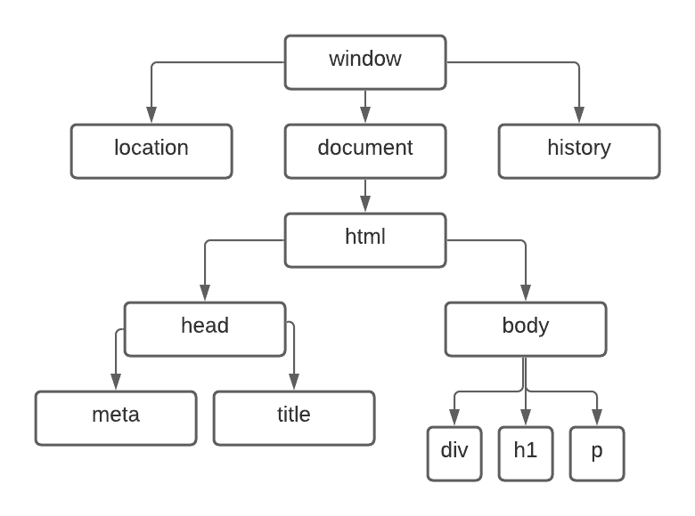

DOM
DOM, Document Object Model , é um conjunto de objetos dentro do navegador que vai dar acesso aos componentes internos do seu website. Árvore DOM começa da raiz do navegador (window). Dentro do window, temos varios objetos como: location, document, history, etc. Dentro do document temos o html, que tem dentro head e body. (está exemplificado na imagem abaixo)
Qualquer coisa dentro da árvore chama-se elemento.
Selecionando os elementos por:
-Marca = getElementsByTagName() {da pra selecionar mais de um objeto}
-ID = getElementById()
-Nome = getElementsByName()
-Class = getElementsByClassName()
-Seletor = querySelector() ou querySelectorAll()
Toda vez que for mais de um elemento (estiver escrito elementS, como neste caso: var p1 = window.document.getElementsByTagName('p')[0]), no fim, para funcionar, terá que adicionar um valor dentro dos colchetes [] de 0 até o numero maximo -1 de elementos presentes. Exemplo seria se usasse o ElementsByTagName e usasse a tag P. Vc teria que contar os parágrafos para poder saber a numeração certa para botar de parametro se não o paragrafo escolhido seria diferente do que vc estava planejando. O 1 sempre começa com 0 e assim vai.
Para usar o Seletor, podemos fazer desta forma: var d = window.document.querySelector('div#msg')[dentro dos parenteses, abre aspas simples e bota a tag e classe ou id # ou .]